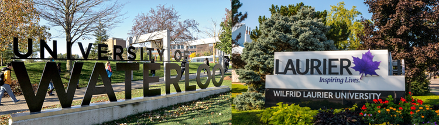

To give an overview of Fiona Dunbar's CV, we'll start with her long experience at the University of Waterloo and Wilfrid Laurier University.

Fiona Dunbar graduated from Wilfrid Laurier class of 2001, graduating at the top of her class and earning a Gold Medal in Mathematics.
She then continued to get a Master in Mathematics from the University of Waterloo, Combinatorics and Optomization with a specialization in Cryptography. Needless to say, professor Dunbar has had plenty affiliation with the Universities even before pursuing the role of lecturer.
Work Experience
Fiona Dunbar has had a vast experience as a dynamic lecturer, approaching 20 years in delivering education to students from around the world.
Fiona Dunbar started her career as an instructor at Wilfrid Laurier University where she was a math instructor for almost 3 years.
Then in 2005, she began working as a lecturer for the University of Waterloo where she continues to work till this day.
She mainly teaches classes revolving around the theories and application of concepts from Calculus and Vectors, as seen from her skills shown throughout undergrad and the pursuing of her masters.